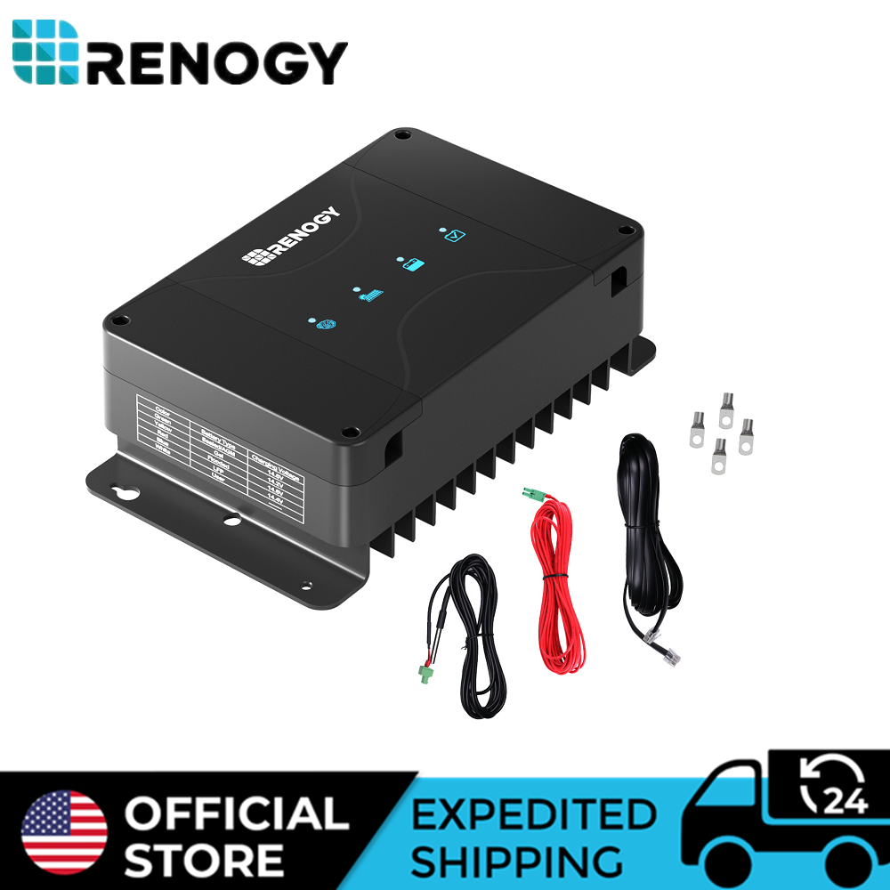
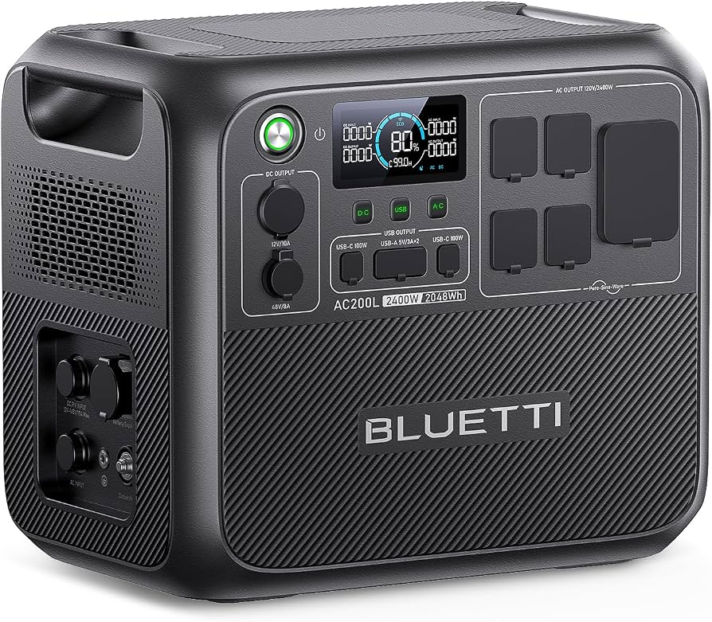

Compare the Top Picks
Check the linked retailer page for current availability and offer details.
| Product | Role in a setup | Buy |
|---|---|---|
| Renogy Smart 50A DC-DC MPPT Battery Charger | Alternator and solar charging for an auxiliary battery. | Check Price on Amazon |
| EF ECOFLOW DELTA 2 | Portable storage without permanent wiring. | Check Price on Amazon |
| BLUETTI AC200L | Higher-capacity portable storage. | Check Price on Amazon |
| Goal Zero Nomad 100W | Portable solar collection. | Check Price on Amazon |
| Jackery Explorer 1000 v2 | Flexible portable power. | Check Price on Amazon |
| Renogy 200W N-Type panel | Larger solar collection. | Check Price on Amazon |
Start with the load, not the panel
Solar is only one side of an overlanding electrical system. Before selecting a panel or power station, write down each device you expect to run, its approximate wattage, and the hours it operates in a normal day. A phone, camera battery, camp lights, fan, fridge, and laptop do not draw energy in the same way. The refrigerator is usually the most important continuous load; charging devices tend to be short but regular loads; and high-draw appliances can quickly change the required inverter and battery size.
That simple inventory prevents two common mistakes. The first is buying a large solar panel without enough storage to keep the collected energy. The second is buying a large battery without a credible plan to recharge it during several days of shade, short drives, or poor panel orientation. Think of the system as a chain: collection, charge control, storage, distribution, and the load itself all need to make sense together.
Six components for a practical setup
1. Renogy Smart 50A DC-DC MPPT Battery Charger

Renogy Smart 50A DC-DC MPPT Battery Charger
Use a dual-input DC-DC charger when a permanent auxiliary battery must recover both from the vehicle alternator and solar input.
Why it belongs in this setup
- Combines alternator and solar charging inputs.
- Provides a controlled charging path for an auxiliary battery.
- Fits a fixed, vehicle-based electrical architecture.
A DC-DC charger is not a substitute for appropriate wire sizing, fuses, battery protection, or installation knowledge. It is the component that makes a permanent system more predictable on driving days, especially when modern alternator behavior is not a reliable direct battery-charging source.
2. EF ECOFLOW Portable Power Station DELTA 2 1024Wh

EF ECOFLOW Portable Power Station DELTA 2 1024Wh
A portable 1024Wh power station for a flexible system that can move between a vehicle, tent, garage, or emergency kit.
Why it belongs in this setup
- Self-contained storage avoids permanent vehicle wiring.
- Useful for smaller electrical loads and organized camp charging.
- Lets new overlanders learn their actual consumption before building a fixed system.
A portable station is often the least complicated route when the rig is still changing. Its trade-off is that your charging inputs, placement, and cabling must still be managed deliberately. Avoid treating a portable station as a reason to skip load planning; it simply packages more of the system in one enclosure.
3. BLUETTI AC200L Portable Power Station 2048Wh

BLUETTI AC200L Portable Power Station 2048Wh
A larger-capacity portable power station for camps that need more reserve between solar collection or driving opportunities.
Why it belongs in this setup
- Higher storage capacity provides more weather margin.
- Appropriate when several planned loads share the same system.
- Retains the portability of an all-in-one power-station format.
More stored energy can reduce the pressure to chase ideal sun every hour, but it also adds weight and cost. For long stationary camps, capacity should be paired with enough recharge capability to avoid treating a large battery as a one-time energy supply.
4. Goal Zero Nomad 100 Watt Monocrystalline Portable Solar Panel
Goal Zero Nomad 100 Watt Monocrystalline Portable Solar Panel
A folding 100W portable panel for a smaller, adjustable solar input at camp. This verified product is intentionally text-first until a current approved product image is available through the site image workflow.
Why it belongs in this setup
- Portable placement can improve sun exposure at camp.
- A 100W class panel is a practical starting point for light consumption.
- Folding hardware is useful when roof space is limited.
Portable panels make the most sense when you can reposition them during the day. They are less convenient while driving and need a secure placement plan, but that flexibility can be valuable in a shaded campsite where a roof-mounted panel stays in the wrong place.
5. Jackery Explorer 1000 v2 Portable Power Station
Jackery Explorer 1000 v2 Portable Power Station
A 1070Wh portable power station for drivers who want a moveable energy reserve without committing to a hardwired auxiliary-battery build. This verified product is intentionally text-first pending a current approved product image.
Why it belongs in this setup
- All-in-one storage simplifies a no-install build path.
- Its capacity class suits organized daily charging and moderate camp loads.
- It can be charged away from the vehicle when needed.
Portable stations are especially useful for people who share gear between vehicles or use the same equipment at home. Their limitation is not the concept—it is the need to keep cables, solar adapters, and actual charging time organized rather than assuming the station will refill itself overnight.
6. Renogy Solar Panels 200 Watt, N-Type Solar Panel
Renogy Solar Panels 200 Watt, N-Type Solar Panel
A 200W panel option for a higher-collection setup. This verified product is intentionally text-first because the existing committed Renogy image is a different foldable suitcase configuration.
Why it belongs in this setup
- A 200W class input creates more daily collection margin than a smaller panel.
- It is relevant for higher-consumption camps and longer stationary stays.
- Panel form factor and mounting need to match the vehicle and storage plan.
Choose a build path before buying hardware
The first path is portable: a solar panel and power station move with you and require little permanent wiring. It works well for a daily driver, rental vehicle, or a rig that is still evolving. The second path is integrated: an auxiliary battery, DC-DC charger, fuse block, and appropriately protected circuits live in the vehicle. It takes more design work but supports predictable charging while driving and a clean, always-ready setup.
A hybrid approach is also reasonable. Some travelers start with a portable station while they learn what the fridge, lights, and camera equipment consume. If that experience proves a permanent system is justified, the early setup becomes a backup power source rather than wasted hardware.
Size storage and solar with weather margin
Calculate daily energy in watt-hours by multiplying each device’s watts by its expected hours of use. Add a margin for conversion losses, warm-weather fridge duty cycles, and days when panels are shaded. A battery should not be planned around its nominal capacity alone; usable capacity, charging losses, and safe discharge limits all matter.
Solar estimates also need margin. Panel ratings are laboratory outputs, not a promise of daily harvest. Vehicle orientation, shade, dirt, seasonal sun angle, wiring losses, and controller behavior affect results. A system that only works under clear noon sun is not resilient. Pairing solar with alternator charging gives a second recovery option, which is particularly valuable on trips with changing weather or tree cover.
For safety, use appropriate fusing, wire gauge, terminal protection, battery chemistry settings, and manufacturer instructions. High-current DC systems can create fire and equipment-damage risks when installed casually. If a permanent battery system is beyond your experience, have an automotive electrical professional review the design and installation.
FAQ
How much solar is enough for a fridge and basic devices?
There is no universal number because fridge duty cycle, weather, and device use vary. Start with measured or manufacturer-listed consumption, then design for days when solar input is below ideal. More storage and more collection capacity both add margin, but they solve different parts of the problem.
Can a portable panel charge while the vehicle is parked in shade?
Yes, if the cable run and campsite allow the panel to be moved into sunlight. This is the primary advantage of a portable panel; it can be oriented independently from the vehicle. Secure it against wind and protect the cable from traffic and abrasion.
What is the simplest reliable way to recharge off-grid?
For many travelers, combining solar with a controlled alternator-charging path is more dependable than relying on either source alone. Solar contributes during camp, while alternator charging helps restore energy on driving days.
Affiliate Disclosure: Trail Built may earn a commission from qualifying purchases made through product links. Recommendations are selected from the site’s verified product pool; current availability is confirmed on the linked retailer page.